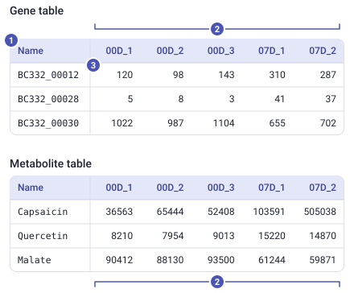
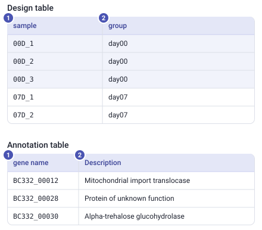

Tutorial
CAT Bridge ranks genes by how closely their expression time course follows the time course of a target metabolite. The analysis runs in your browser: your tables are not uploaded. The first run downloads Python and its packages (about 45 MB); your browser keeps them for later visits.
Tables. Every table is a .tsv, .csv or .txt file with a header row and names in the first column. Cells hold plain numbers; leave missing values empty (or NA) and use a point as the decimal mark. Excel files are not supported: save them as CSV first.
- Gene table. Rows are genes, columns are samples (with a design table) or time points (without). The time order is the column order; names are never sorted. With a design table the values must be raw counts (DESeq2); without one, any non-negative expression values work.
- Metabolite table. Rows are metabolites. The columns must be the same as in the gene table, in the same order.
- Design table (optional). Only needed with replicates. One row per sample: the first column holds the sample names (the column headers of the two tables), the column
groupholds the time point. Replicates share a group. The two groups of the fold change need at least 2 samples each. Without replicates, do not add a design table. - Annotation table (optional). The first column holds gene names; the column
Descriptionholds free text. Descriptions with enzyme words (names ending in -ase, enzyme, synthase) add a small bonus to the score.


Target metabolite. Choose one row of the metabolite table. It must have a value at every time point and must not be constant.
Metric. One measure of how closely a gene follows the target metabolite. The default is CCM.
- Granger
- Granger causality test. The p-value is used; lower is stronger. Needs more than 3 × lag + 1 time points.
- CCM
- Convergent cross mapping. Higher is stronger. Needs at least E + 2 points after embedding.
- CCA
- Canonical correlation. Higher is stronger.
- DTW
- Dynamic time warping distance. Lower is stronger.
- CCF
- Cross-correlation within the lag. Higher is stronger.
- Spearman, Pearson
- Rank and linear correlation. Higher is stronger; a negative correlation scores low.
Advanced. Clusters is the number of clusters of the time courses (0 for none; default 8). Lag is used by Granger and CCF (default 1). E and tau are the embedding dimension and delay of CCM (defaults 3 and 1).
Fold change. It is defined on one interval: the step between two adjacent time points in which the target metabolite rises fastest (largest increase of its mean; the earlier step if tied). The results show the two time points.
log2 fold change = log2(expression at the later time point / expression at the earlier time point)
Without a design table the expression values are used as they are, with a pseudocount of 1 added to both. With a design table, DESeq2 compares the raw counts of the two groups and shrinks the estimates. If the target never rises, the fold change is empty for all genes and counts as 0 in the score.
Score. The metric, the fold change and the annotation score are each scaled to 0–1 (Granger as −log10 p and DTW as −distance, so that larger is always stronger). A missing value counts as 0. The annotation term is used only with an annotation table.
Score = sqrt(metric² + fold change² + annotation²), rescaled to 0–1
Results. The table is ranked by score and shows the top 100 genes; search and sorting cover all genes, and “Show 100 more” extends the list. Select a row to draw the time courses of that gene and the target metabolite, each scaled to 0–1 (group means with replicates). In the scatter plot every gene is a point; select a point to find its row. Download CSV saves the full ranked table with the metric, fold change, cluster, annotation and, with a design table, the DESeq2 columns.
Checks. Before the run, your browser checks: file type, empty files, separator, header, row lengths, name column, duplicated names and columns, non-numeric, infinite and negative values (all rows, the first 40 MB of a file), matching columns of the gene and metabolite tables, the design table (group column, sample names, replicates per group, including the two groups of the fold change), the annotation table (Description column, share of matching gene names) and the target metabolite. Errors block the run; warnings do not. Messages from the analysis itself appear unchanged next to the table they concern; the full trace is under Technical details.
| Message | What to do |
|---|---|
| Excel files are not supported | In Excel choose Save As > CSV, then select the .csv file. |
| The columns of the gene and metabolite tables do not match | Use the same sample or time point names in the same order in both tables. |
| … not in the first column of the design table | Give the design table one row per sample, named exactly like the column headers. |
| The design table needs a column named ‘group’ | Add a column named group with the time point of each sample. |
| … has only 1 sample | Add replicates, or remove the design table. |
| … is not a number | Replace the cell with a number, or leave it empty. |
| … is constant over time / has no value at … | Choose another target metabolite, or fill in the missing values. |
| None of the annotation names matches a gene name | Put the gene names of the gene table in the first column of the annotation table. |
| Only N time points | Warning. Use at least 4 time points; Granger and CCM need more. |
| Target … is not in the index | Choose the target metabolite from the list. |
The same analysis is available as a Python package: pip install catbridge (PyPI, GitHub).